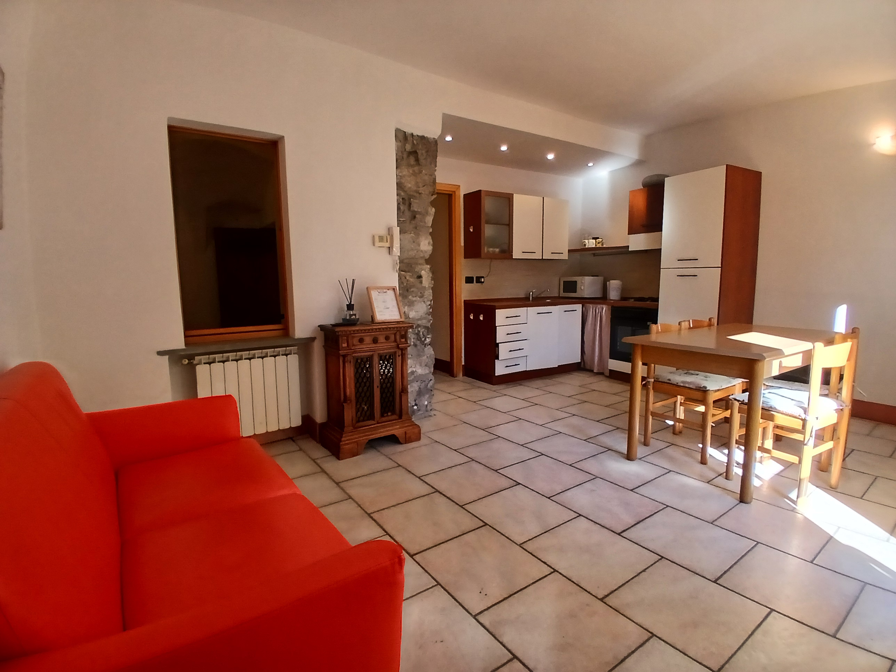
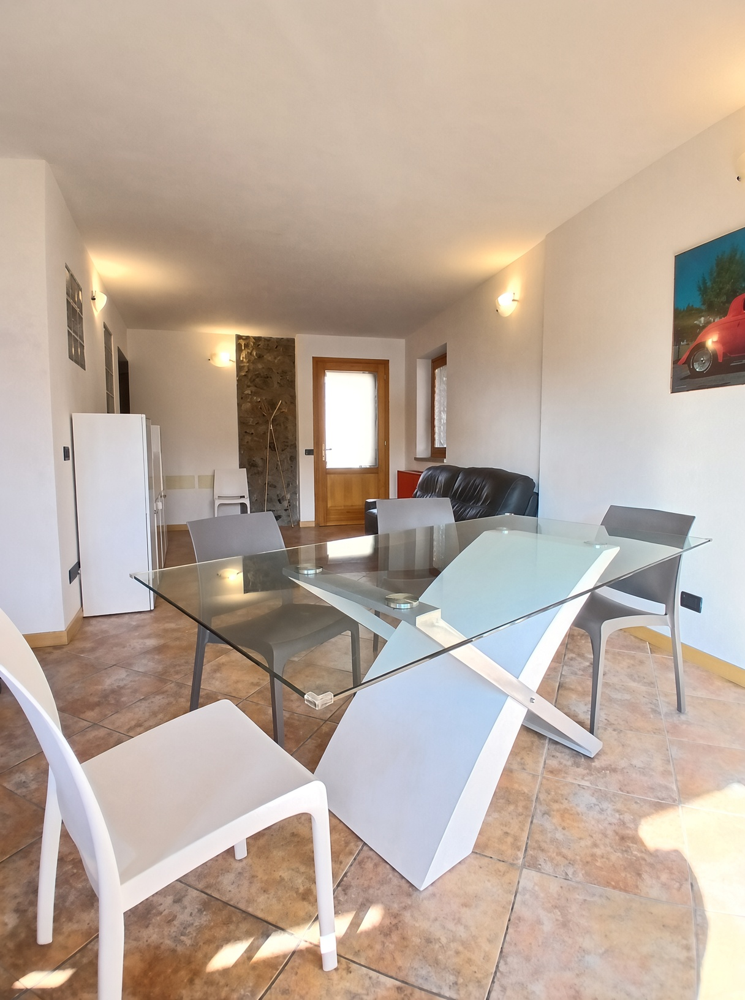

Appartamenti in un edificio storico del 1700
a Solto Collina, sul Lago d'Iseo
La Casa delle Fate si trova in un antico borgo di Solto Collina, in un edificio del 1700 finemente restaurato. A pochi passi dalla chiesa del paesello, da cui si gode una vista incantevole sul lago. Due appartamenti accoglienti, con ingresso indipendente e cortile, ideali per chi cerca tranquillità, natura e autenticità.

Ingresso indipendente e cortile esclusivo. Cucina/soggiorno, camera matrimoniale, camera doppia e bagno.
CIR: 016200CNI00013
CIN: IT016200C2UAHS6HFE

Accogliente e luminoso, con balcone. Ideale per famiglie o coppie.
Numero di licenza: 016200-CNI-00039
CIN: IT016200C27DLQRDNX
Facile percorso di 3,5 km con pannelli naturalistici e viste sul lago. Partenza dal parcheggio vicino al cimitero di Esmate.
Maggiori infoBreve passeggiata panoramica (circa 40 minuti) fino alla chiesetta con vista mozzafiato su Lago d’Iseo e Monte Isola.
Scopri il percorsoEscursioni in barca, visite a Monte Isola, borghi storici e ottima cucina locale. Il lago è a pochi minuti di macchina.
Maggiori infoContattaci per disponibilità e prezzi. Ti risponderemo al più presto.
Telefono / WhatsApp: 351 975 2062
Email: lacasadellefatefate@gmail.com
Via Garibaldi 6, Solto Collina (BG)